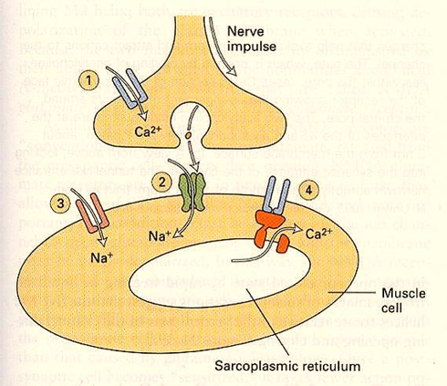
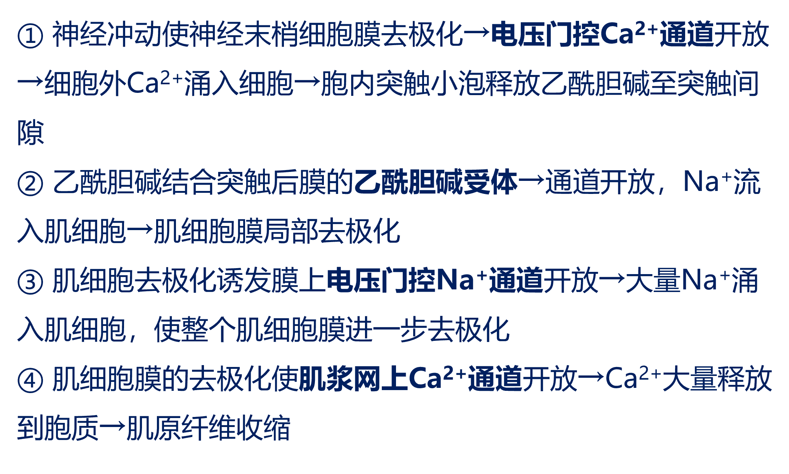

神经系统与脑疾病
速查
脑的结构和功能
神经系统的细胞组成
血脑屏障
5.1 脑的结构和功能
神经系统的组成
脑
脑干
自上而下分为延髓、脑桥和中脑
作用：
- 传导兴奋
- 反射的低级中枢
- 脑干网状结构，维持一些生理活动
小脑
分为原小脑、旧小脑和新小脑
大脑皮层
分为左右半球
有很多褶皱（沟和回）
有灰质和白质
胼胝体
链接左右半球，介导大脑半球之间的通讯
5.2 神经系统的细胞组成

神经元
有电化学活性，感受刺激，产生神经冲动，分泌神经递质，可以传递和整合信息
神经胶质细胞
数量是神经元的几十倍，是绝缘体，无极性；对神经元起保护、支持、绝缘作用
少突胶质细胞可特化为髓鞘；小胶质细胞具有免疫功能，可转变为巨噬细胞
突触
神经元与效应器细胞或另一神经元之间的信息传递位点
由突触前膜、突触间隙、突触后膜组成
动作电位
钾钠学说：细胞膜受刺激，钠离子的通透性显著增加，钠离子内流，造成膜内负电位消失（去极化）
钠钾泵
是膜上的蛋白质，通过水解1个ATP，输出3个Na+，转入2个K+，维持极化状态（内负外正）
细胞膜电位
神经元细胞质膜内外有电位差，静息状态下外正内负（两侧离子浓度不同导致）
神经递质
由突触前膜释放，有神经元之间或神经元与效应器细胞之间的信息传递功能的化学物质
神经-肌接头处粒子通道协同活动
|  |  |
5.3 血脑屏障
血管和脑之间有一种选择性地组织某些物质由血液进入大脑的“屏障”
从管内算起，血脑屏障有3层：
- 脑毛细血管内皮细胞衔接紧密
- 脑毛细血管内皮细胞外有连续的基底膜
- 脑毛细血管壁外表面积85%都被神经胶质细胞的终足或称脚板包围